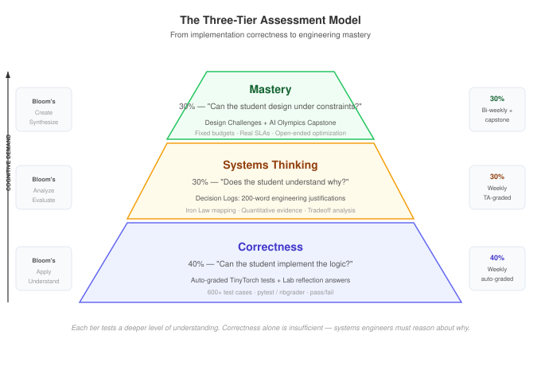

Assessment & Grading
Rubrics, examples, and grading strategies
This guide provides everything you need to evaluate student mastery: weighted grade structures, detailed rubrics, sample student work, and the AI Olympics capstone specification.
1. The Three-Tier Assessment Model

We recommend a 100-point scale per assignment, distributed across three tiers:
| Tier | Method | Weight | What It Tests |
|---|---|---|---|
| Correctness | Auto-graded tests (TinyTorch, Lab answers) | 40% | Can the student implement the logic? |
| Systems Thinking | Decision Logs (200-word justifications) | 30% | Does the student understand why? |
| Mastery | Design Challenges (open-ended optimization) | 30% | Can the student apply theory to new problems? |
Grading Load Estimates
Plan your TA staffing based on these estimates:
| Task | Time per Student | Frequency | 30-Student Section | 60-Student Class |
|---|---|---|---|---|
| Decision Log grading | 3–5 min | Weekly | ~2 hrs/week | ~4 hrs/week |
| TinyTorch systems questions | 5–8 min | Weekly | ~3 hrs/week | ~6 hrs/week |
| Design Challenges | 10–15 min | Bi-weekly | ~4 hrs bi-weekly | ~8 hrs bi-weekly |
| TinyTorch auto-grading | Automated | Weekly | ~10 min (review flags) | ~20 min |
Use the 3-question speed rubric for Decision Logs — it cuts grading time by ~40% while maintaining consistency. Grade all logs for one week in a single sitting.
Semester-Level Grade Breakdown
Semester 1 (Foundations):
| Component | Weight | Count |
|---|---|---|
| TinyTorch Modules | 35% | 8 modules |
| Lab Decision Logs | 25% | 15 labs |
| Design Challenges (Part C) | 20% | 4 major (one per Part) |
| Capstone (AI Olympics) | 20% | 1 |
Semester 2 (Scale):
| Component | Weight | Count |
|---|---|---|
| Lab Decision Logs | 40% | 15 labs |
| Design Challenges | 30% | 4 major (one per Part) |
| Capstone (Fleet Synthesis) | 30% | 1 |
2. Decision Log Rubric (30 Points)
The Decision Log is the most important metacognitive artifact in the course. Use this rubric for consistent grading:
| Criterion | Excellent (10) | Adequate (6) | Insufficient (2) |
|---|---|---|---|
| Quantitative Evidence | Cites 3+ specific numbers from instruments (latency, memory, throughput, accuracy). | Cites 1–2 numbers. | No numbers; vague assertions (“it was faster”). |
| Causal Reasoning | Explains why using Iron Law terms or Roofline terminology. Maps the optimization to a specific equation term. | Describes what happened but misses the “why.” | Lists observations without explanation. |
| Constraint Awareness | Explicitly addresses tradeoffs (e.g., “Trading 1.2% accuracy for 4x throughput to meet the 50ms SLA”). | Mentions constraints but doesn’t quantify the tradeoff. | Ignores constraints entirely. |
Sample Decision Log: Excellent (30/30)
Lab 09: Quantization — Part C Decision Log
I recommend deploying the MobileNetV2 model with INT8 post-training quantization for the Seeed XIAO target.
Evidence: INT8 quantization reduced model size from 14.2 MB to 3.6 MB (3.9x compression), meeting the 4 MB flash constraint. Inference latency dropped from 48.3ms to 12.1ms (3.99x speedup), well under the 50ms SLA. Accuracy decreased from 91.4% to 90.2% (1.2% drop).
Reasoning: The dominant bottleneck on this device is the \(D_{vol}/BW\) term — the 256KB SRAM cannot hold FP32 activations for the depthwise separable convolutions. INT8 reduces \(D_{vol}\) by 4x, which directly unblocks the memory bandwidth constraint. The accuracy loss is negligible because MobileNetV2’s architecture is inherently quantization-friendly (no large dynamic ranges in the depthwise layers).
Tradeoff: I rejected INT4 quantization despite its additional 2x memory savings because accuracy dropped to 84.7% (6.7% loss) — below the 88% project threshold. The marginal memory gain (1.8 MB → 0.9 MB) was not worth the accuracy cliff.
Sample Decision Log: Insufficient (6/30)
The quantized model was smaller and faster. I used INT8 because it seemed like a good balance. The model still worked after quantization.
Why insufficient: No specific numbers. No Iron Law mapping. No tradeoff analysis. No evidence of understanding why it worked.
3. TinyTorch Grading (100 Points per Module)
TinyTorch modules test both implementation correctness and systems understanding:
Auto-Graded (70 Points)
- Standard unit test pass/fail via
pytestornbgrader - Tests cover: correctness, edge cases, numerical stability
- All-or-nothing per test (no partial credit for failing tests)
Systems Thinking Questions (30 Points)
Each module includes 3 manually-graded questions (10 points each). These ask students to reason about the systems implications of their code.
Example questions by module:
| Module | Sample Question |
|---|---|
| 01: Tensor | “Your tensor stores data in row-major order. How would inference latency change if you switched to column-major? For which operations would it matter?” |
| 06: Autograd | “Your backward() builds a full computation graph in memory. At what model size (number of parameters) would this become the memory bottleneck on a 16GB GPU? Show your calculation.” |
| 08: Training | “Your training loop processes one batch at a time. Describe two concrete changes that would improve GPU utilization, and estimate the speedup for each.” |
Grading Scale for Systems Thinking Questions
| Score | Criteria |
|---|---|
| 10 | Correct reasoning with quantitative estimate. References specific hardware constraints. |
| 7 | Correct direction of reasoning but missing quantitative support or hardware specifics. |
| 4 | Partially correct but with significant conceptual errors. |
| 1 | Attempted but fundamentally misunderstands the systems implication. |
4. Design Challenge Rubric (50 Points)
Design Challenges are the Part C of labs — open-ended optimization problems with real constraints.
| Criterion | Excellent (12–13) | Adequate (7–9) | Insufficient (1–4) |
|---|---|---|---|
| Solution Quality | Meets all constraints (latency, memory, accuracy). Near-optimal configuration. | Meets most constraints. Reasonable but suboptimal. | Fails to meet one or more constraints. |
| Methodology | Systematic exploration: tried multiple approaches, justified final choice. | Tried 2–3 approaches but justification is weak. | Trial-and-error with no systematic approach. |
| Iron Law Mapping | Every optimization traced to a specific Iron Law term. | Some optimizations mapped, others missing. | No Iron Law references. |
| Documentation | Decision Log meets Excellent criteria (see above). | Decision Log meets Adequate criteria. | No meaningful documentation. |
5. The AI Olympics — Capstone Specification (Semester 1)
The course culminates in a competition: deploy the “Smart Doorbell” application across multiple hardware tracks.
The Challenge
Design and optimize an image classification pipeline (person detection + recognition) that meets strict deployment constraints:
| Track | Device | Latency Budget | Memory Budget | Target Accuracy |
|---|---|---|---|---|
| Cloud | A100 GPU | < 10ms P99 | 16 GB | > 95% |
| Edge | Raspberry Pi + Coral | < 50ms P99 | 1 GB | > 90% |
| Mobile | Simulated phone SoC | < 30ms P99 | 256 MB | > 88% |
| Tiny | Seeed XIAO ESP32S3 | < 100ms P99 | 256 KB | > 80% |
Scoring (100 Points)
| Component | Points | Description |
|---|---|---|
| Metric Achievement | 40 | Score = (Accuracy + Throughput) / (Energy + Latency). Higher is better. |
| Engineering Report | 40 | 1,000-word design document. Every decision mapped to Iron Law. Rubric: 10 pts quantitative evidence, 10 pts causal reasoning, 10 pts constraint awareness, 10 pts clarity. |
| Robustness | 20 | System is tested with distribution shift (brightness, noise, rotation). Graceful degradation > catastrophic failure. |
Deliverables
- Code submission: Model, optimization scripts, deployment configuration
- Design report: 1,000 words, structured as Problem → Approach → Results → Tradeoffs
- Live demo: 5-minute presentation showing deployment on target hardware (or simulation)
6. Semester 2 Assessment: Scale-Specific Criteria
As the course moves to distributed systems, assessment shifts toward reliability and economics:
TCO Audit (Design Challenge)
Can the student calculate the 3-year Total Cost of Ownership of their cluster design?
Students must account for: hardware acquisition, power consumption (including PUE), network equipment, cooling, maintenance, and opportunity cost of downtime.
Failure Recovery Analysis (Design Challenge)
Can the student articulate how their system recovers from a node failure without restarting a 90-day training run?
Students must specify: checkpoint frequency, recovery time, wasted computation per failure, and the cost-optimal checkpoint interval.
Carbon Budget (Design Challenge)
Can the student justify their datacenter location based on carbon footprint?
Students must compare at least 3 regions (e.g., Quebec, Virginia, Iowa) using grid carbon intensity data, PUE, and renewable energy availability.